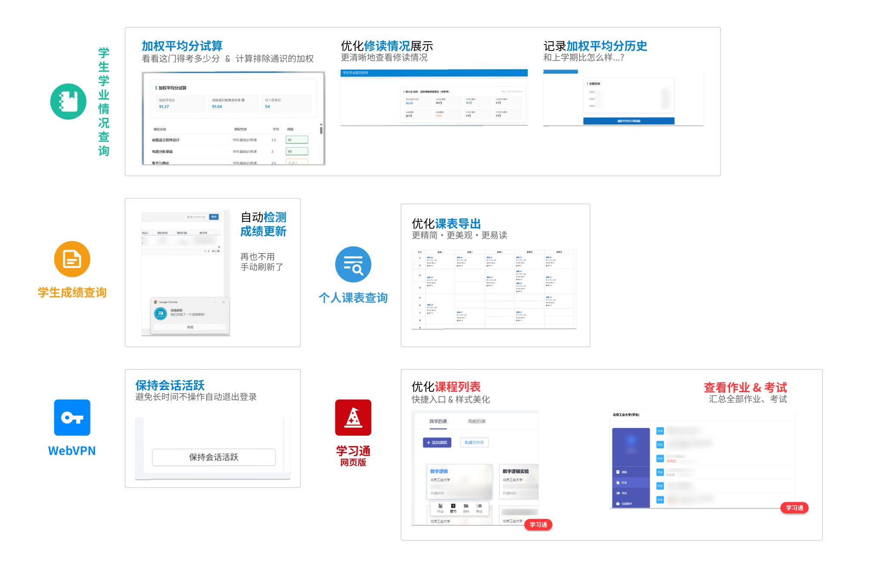

若您已经安装了 Tampermonkey（油猴 / 篡改猴）插件，请点击该 链接 添加此脚本。
若您还未安装上述插件，请使用该提示词询问 AI 如何安装（点击即可复制）
请告诉我如何在我的浏览器上安装 Tampermonkey 插件。我的浏览器是 [浏览器名称]、系统为 [系统名称]。
在安装 Tampermonkey 完成后，我希望添加脚本 Advanced BJUT Online，URL 为：https://cdn.jsdelivr.net/gh/DeepslateBricks/Advanced-BJUT-Online/advanced-bjut-online.js
如果您喜欢这个工具的话，欢迎 Star GitHub 仓库 支持我们~
教务系统 - 学生学业情况查询
教务系统 - 学生成绩查询
教务系统 - 个人课表查询
WebVPN - 首页
学习通 - 主页优化
您可以通过右上角的菜单选择开启 / 关闭此功能。这一功能属于实验性功能，默认在域名 i.chaoxing.com 生效。
若该工具违反了学校相关规定，请您通过 Issues 等方式联系我。我会在收到通知的第一时间=下架相关工具或删除相关内容。
本项目为作者个人利用业余时间开发的技术交流与分享项目。本项目非学校官方授权、非官方组织开发，其所有代码及功能均不代表学校的任何官方立场。